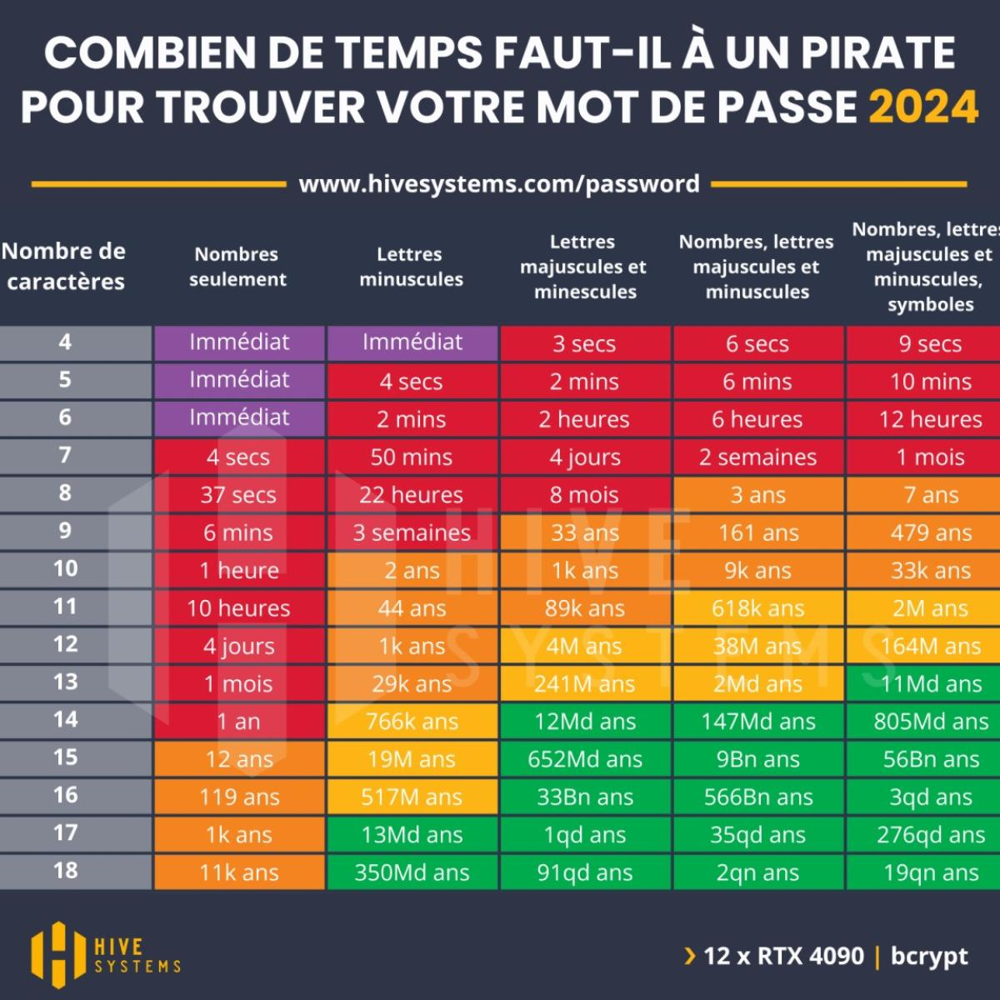
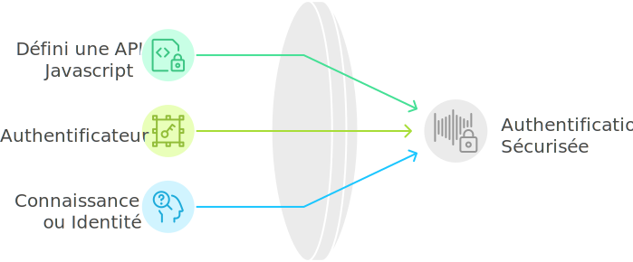

Passkeys et WebAuthn
Pour une authentification fluide et sécurisée

1.
Quel est le problème à résoudre ?
2.
Principe de WebAuthn
3.
Intégration avec Symfony
Qui suis-je ?
|
10100 
|
AFOL 
|
Comédien |
Actuellement
Co-founder & CTO @ Vasco.fund

1.
Quel est le problème à résoudre ?
Historique
Brute force

Réutilisation sur de nombreux sites
Phishing
2FA / MFA
Utilisation du 2FA en entreprise
2.
Principe de WebAuthn
Qu'est ce que WebAuthn
Utilisable à grande échelle
Modulo Firefox / TouchId
A quoi ça ressemble ?
Enregistrement
const credential = await navigator.credentials.create({
publicKey: publicKeyCredentialCreationOptions
});
A quoi ça ressemble ?
Authentification
const credential = await navigator.credentials.get({
publicKey: publicKeyCredentialRequestOptions
});
A quoi ça ressemble ?
Et c'est tout ?
Oui